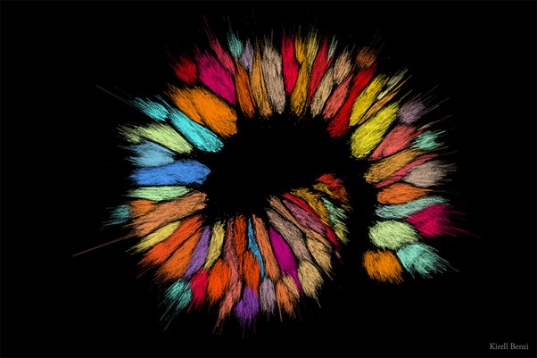
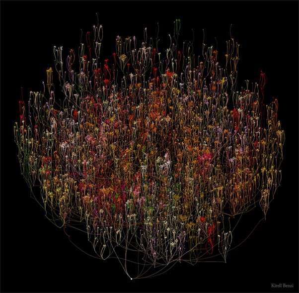

According to research, data-driven art refers to an artistic practice that uses datasets to convey emotions and a message to the audience through artwork. The artwork is not solely based on the artist's imagination but rather on a core set of data and therefore the artwork has some truth to it because it is based on factual data. (Benzi 2020)
Unlike data visualization such as graphs where the data tells a very straightforward and apparent story, data art is not necessarily the same and won’t immediately make sense to the audience and therefore requires an explanation if it cannot be understood at first glance. To clarify the data that has been used and what is being conveyed and why? (Benzi 2020)
For my data-driven artwork, my aim was to embody what my data is all about which is make-up and therefore beauty. My initial idea was to have a data art that would somehow represent a facial structure, mouth, eye, etc. Because the makeup is highly directed and used on the face and therefore, I wanted to embody that idea through my data-driven artwork. I have encountered some issues trying to implement this idea therefore I have resorted to creating a scatter plot of colours based on the different types of products or according to their names. See the example below.
Amicitia (2021) by Kirell Benzi
Together, 2020 by Kirell Benzi
In his data-driven artwork above titled Together(2020) by Kirell Benzi this artwork visualizes the hierarchical positions of employees in the Havas group. The Havas group is the leading communication group and, in the artwork, it represents the link of all the workers starting at the top from the CEO who is then linked to the executives etc. (Benzi 2020) Even though I would like for my artwork to have links among it but that is something I can still work through and figure out how to implement and relate it to my data set.
I want to relate my data set to that of Benzi’s first data set that I presented Amicitia which reminds me of an eyeshadow palette and this can relate directly to my data set if I choose to use the data based on the different eyeshadows which usually come in a large range of colours. This form of data artwork enhances the data set as it embodies the pure idea of makeup and eyeshadow as being colorful and beautiful. Even though I don’t think it does much of a job to enhance the data that much but if looking at it from an artistic point of view and makeup is also being used to create art.
It does however reveal a new way of thinking about the data because this makes out to be a more literal representation of the data as I mentioned above. As of right now, I am not sure in relation to what will my data be represented perhaps the larger portions of colour show the most expensive eyeshadow and allocate a certain colour for the most expensive and descending. Given the data set I am using, I want to try and convey the real-life essence of the data in it is makeup.
References
Kirell Benzi - What is Data Art? A definition. (n.d.). Retrieved October 28, 2022, from https://www.kirellbenzi.com/blog/data-art-definition .